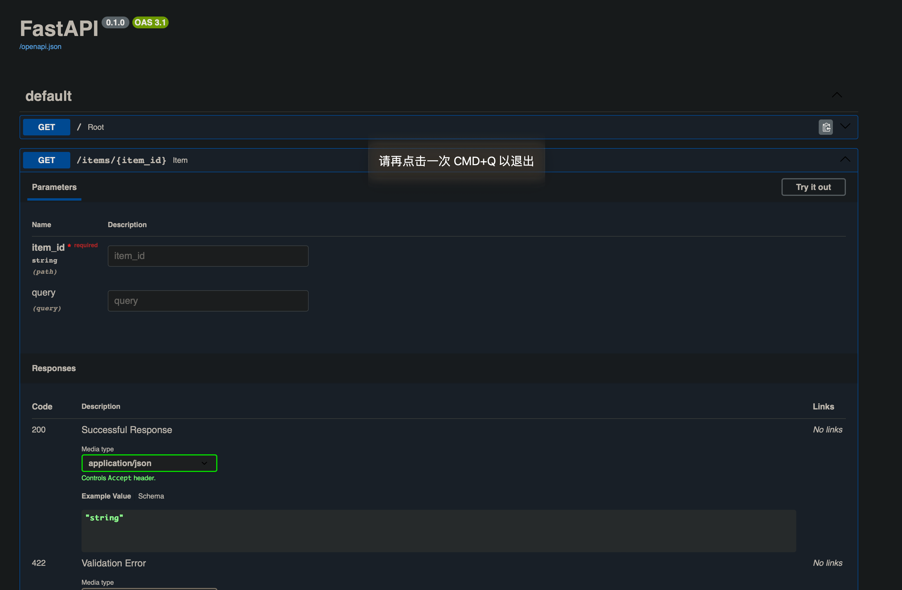

2024-02-21
交互式API文档
修改于: 2024-02-21FastAPI 提供了内置的交互式 API 文档，使开发者能够轻松了解和测试 API 的各个端点。 这个文档是自动生成的，基于 OpenAPI 规范， 支持 Swagger UI 和 ReDoc 两种交互式界面。
通过 FastAPI 的交互式 API 文档，开发者能够更轻松地理解和使用 API，提高开发效率
在运行 FastAPI 应用时，Uvicorn 同时启动了交互式 API 文档服务。 默认情况下，你可以通过访问:
http://127.0.0.1:8000/docs
来打开 Swagger UI 风格的文档

或者访问:
http://127.0.0.1:8000/redoc
来打开 ReDoc 风格的文档。
ReDoc 是另一种交互式文档界面，具有清晰简洁的外观。 它使得开发者能够以可读性强的方式查看 API 的描述、请求和响应。 与 Swagger UI 不同，ReDoc 的设计强调文档的可视化和用户体验。
注解
个人感觉 ReDoc 好看些, 不过 ReDoc 貌似不支持在文档调用API
交互式文档的优势
- 实时更新
- 交互式文档会实时更新，反映出应用代码的最新更改。
- 自动验证
- 输入参数的类型和格式会得到自动验证，降低了错误的可能性。
- 便于测试
- 可以直接在文档中进行 API 请求测试，避免使用其他工具。
升级实例
我们借助 Pydantic 来使用标准的 Python 类型声明请求体:
from typing import Union
from fastapi import FastAPI
from pydantic import BaseModel
app = FastAPI()
class Item(BaseModel):
name: str
price: float
is_offer: Union[bool, None] = None
@app.get("/")
def read_root():
return {"Hello": "World"}
@app.get("/items/{item_id}")
def read_item(item_id: int, q: Union[str, None] = None):
return {"item_id": item_id, "q": q}
@app.put("/items/{item_id}")
def update_item(item_id: int, item: Item):
return {"item_name": item.name, "item_id": item_id}